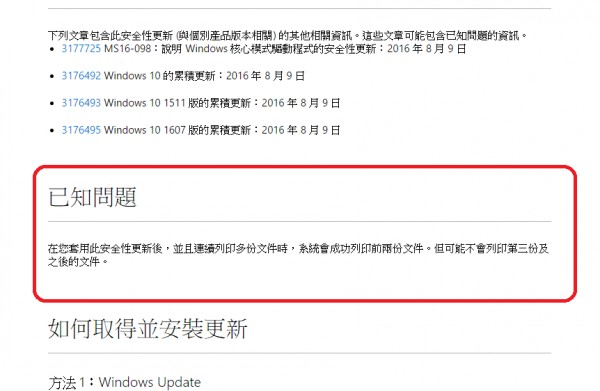
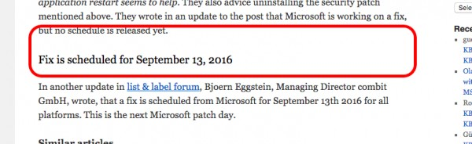

系統無法多印超過2杯以上的貼紙
使用貴站的系統一年多都沒問題
最近系統突然無法列印出超過2杯以上的貼紙出來
例如我要出10杯一樣品項的飲料，但是只會印出2張貼紙
可以不同款飲料只要不超過2杯都可以正常印出貼紙
造成我們現在出餐上的困擾
麻煩請問這是甚麼問題呢?
速回，感謝!!
3 個回答
您好
站長剛自己做了測試
點紅茶->改數量單價 10個->外帶 ,系統很正常的印出10張貼紙
您的操作是否也是這樣?但只印出兩張?
如果是的話
很有可能是您的貼紙機問題,如要找出切確原因 只能透過網路連線看了
請來信 advposys@gmail.com
告知teamviewer 帳號及密碼
teamviewer下載網站
http://www.teamviewer.com/zhtw/download/windows/
安裝teamviewer 站長才有辦法跟您連線查看原因
站長剛自己做了測試
點紅茶->改數量單價 10個->外帶 ,系統很正常的印出10張貼紙
您的操作是否也是這樣?但只印出兩張?
如果是的話
很有可能是您的貼紙機問題,如要找出切確原因 只能透過網路連線看了
請來信 advposys@gmail.com
告知teamviewer 帳號及密碼
teamviewer下載網站
http://www.teamviewer.com/zhtw/download/windows/
安裝teamviewer 站長才有辦法跟您連線查看原因
您好
站長詢問了微軟開發者論壇 證實了這是windows 10 在2016 年 8 月 9 日發佈的更新檔有問題
更新檔為KB3176493,微軟相關參考網址在
https://support.microsoft.com/zh-tw/kb/3178466

由於windows 10無法移除更新 修正也還沒放出 這是微軟的問題 站長也無力解決 ,只能等待微軟放出更新檔了
由於win 10會自動更新 ,營業的POS機,最重要的就是穩定,如果想上網的話 建議就是換回windows 7 32位元,穩定後 就把自動更新關掉,避免掉一些自動更新後的莫名問題
針對這個問題 根據微軟內部員工的所寫的部落格 預計會在
2016/9/13 發布修正 參考網址
http://borncity.com/win/2016/08/19/printing-issues-with-microsoft-security-patch-ms16-098/
